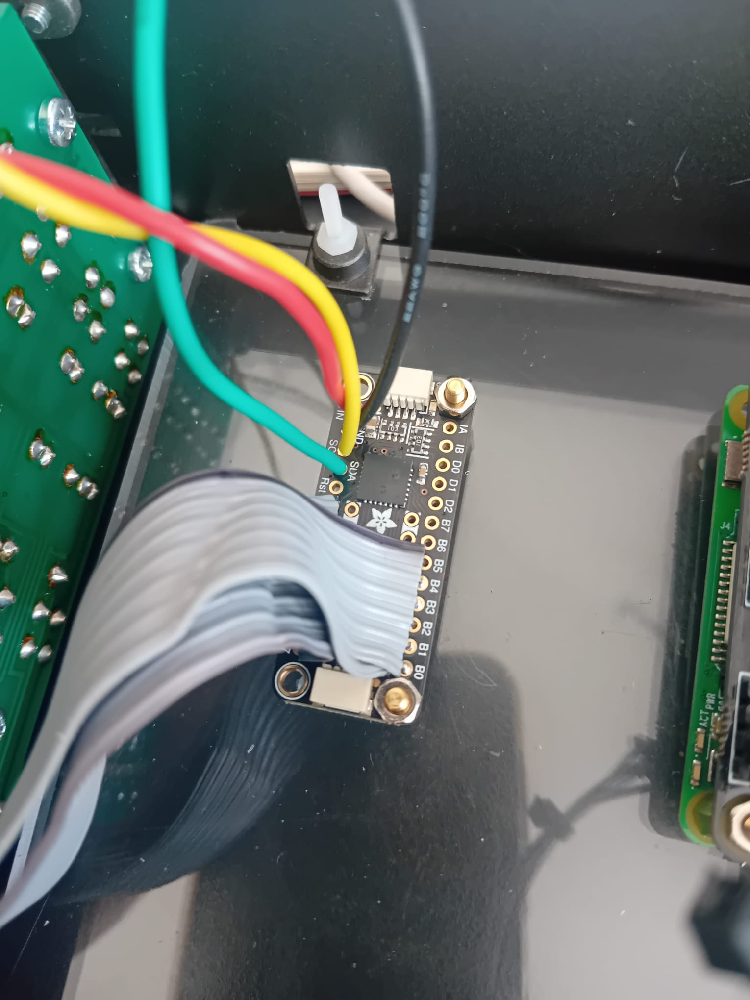

MCP23017 Board Install
What the MCP23017 does
The MCP23017 is an I²C GPIO expander that allows you to dramatically increase the number of usable inputs and outputs on a Raspberry Pi. It is especially useful when working with large button matrices, LEDs, or multiple hardware modules.
Instead of running a large number of individual wires directly to the Raspberry Pi (for example, 20 wires for buttons and LEDs), the MCP23017 reduces this to just four connections: power, ground, SDA, and SCL.
Each MCP23017 has a unique I²C address, allowing multiple boards to be used on the same system. The default address is 0x20 (shown as 20 in decimal).
The MCP23017 board

This compact board makes it easy to connect ribbon cables directly from the FM4 button and LED assembly.
- Connect the LED ribbon cable to row A0–A7
- Connect the button ribbon cable to row B0–B7
- The two inner rows on the board are ground
- The first wire of the button ribbon must be connected to one of the ground rows
- The second wire of the button ribbon connects to B0
All that’s required is to desolder the ribbon cables from the original FM4 PCB and resolder them onto this board.
Wiring the MCP23017 board
The image above shows a completed wiring example. Both ribbon cables are soldered neatly into rows A and B.
- The first wire of the button ribbon is routed underneath and connected to a nearby ground pin
- Power and I²C connections use individual wires for clarity and reliability
-
Typical colour coding:
- Red – Power (+V)
- Black – Ground (GND)
- Yellow – SCL (I²C clock)
- Green – SDA (I²C data)
Consistent colour coding makes troubleshooting far easier later on.
Checking the I²C address
Once the four main connections (VCC, GND, SDA, SCL) are in place, you should verify that the Raspberry Pi can see the MCP23017.
- Open a terminal (Putty, Terminus, or SSH)
- Connect to your Raspberry Pi
- Run the following command:
sudo i2cdetect -y 1If everything is connected correctly, you should see the address 20 appear in the grid.
If no address appears, or the board is not detected, the most common cause is the SDA and SCL wires being swapped.
Address 20
Address 0x20 (displayed as 20) is the default I²C address for the MCP23017.
One of the strengths of this board is that multiple MCP23017 units can be used together, each configured with a different address. This is particularly useful in more complex builds such as robotics, drones, or multi-module control systems.
If your LEDs respond correctly when buttons are pressed, the board is wired and communicating properly.